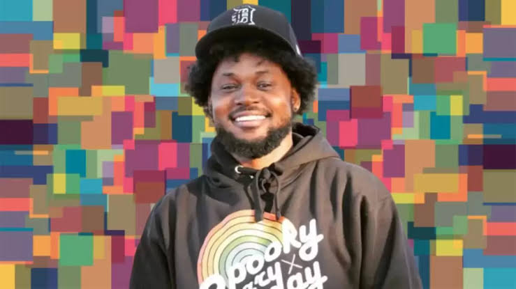

Welcome to GYG, your ultimate destination for unlocking the full potential of your YouTube channel! In the dynamic and ever-evolving world of online content creation, aspiring and established YouTubers alike face numerous challenges on their journey to success. Our mission here at [Your Website Name] is to provide you with the tools, strategies, and resources you need to not only survive but thrive in the competitive landscape of YouTube.
As of my last knowledge update in January 2022, Cory Kenshin is a popular American YouTuber and gaming content creator. Born on November 9, 1992, as Cory DeVante Williams, he has gained a massive following for his engaging and entertaining videos, primarily focused on horror games.As of my last knowledge update in January 2022, Cory Kenshin is a popular American YouTuber and gaming content creator. Born on November 9, 1992, as Cory DeVante Williams, he has gained a massive following for his engaging and entertaining videos, primarily focused on horror games.Now has over 14 million subscribers>
https://www.youtube.com/@CoryxKenshin/videosShxtsnGigs the well known Uk based podcast, gaining major success in the year 2021. In this year they where new to GYG, they put thier trust in us and wth the aid of thier co-operation, they doubled thier subscriber count. They are currenty the 2nd most streamed podcast after The Joe Rogan Podcast
Instagram model and social media influencer who is known for posting fashion and lifestyle photos on his moses.ldn account. He has more than 180,000 followers on the platform. He's traveled to many places across the world including Dubai, Portugal, and Turkey.
<